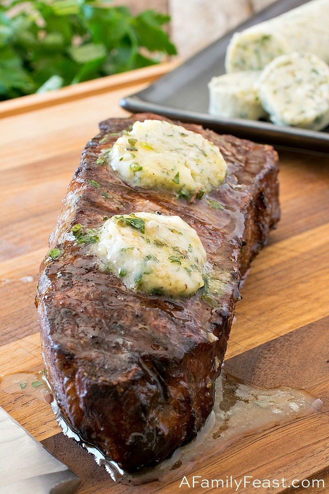

Steak Recipe

A four step process to make a delicious simple butter-based steak.
Cooking Ingredients Needed
- 1 1¾"-thick bone-in rib eye (about 1½ lb.)
- Kosher salt, freshly ground pepper
- 2 tsp. vegetable oil
- 3 Tbsp. unsalted butter
- 2 sprigs rosemary
- 2 garlic cloves, crushed
- Flaky salt
Cooking Instructions
- Season steak generously with kosher salt and pepper and let sit at room temperature 1 hour.
- Heat a dry large skillet, preferably cast iron, over medium-high, then add oil.
As soon as oil is smoking, cook steak, turning every 2 minutes or so, until a deep
brown crust forms and the internal temperature is a few degrees below your favored
doneness (120°–125° for medium-rare), 8–10 minutes.
- Add butter, rosemary, and garlic to skillet, tilt pan toward you so that butter pools
on one side, and use a large spoon to continually baste steak with butter. Continue
until butter is no longer bubbling and it smells nutty and is beginning to brown,
about 1 minute. Transfer meat to a cutting board and let rest 10 minutes.
(For medium-rare, your steak should reach an internal temperature of 125°–130°.)
- Cut meat from bone and slice against the grain 1" thick. Spoon some infused
brown butter over steak and sprinkle with sea salt.